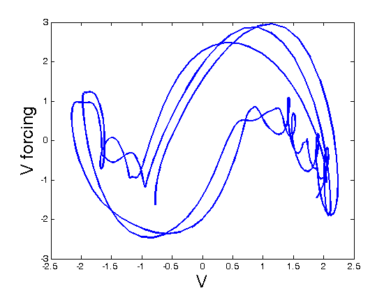

<!doctype html public "-//w3c//dtd html 4.0 transitional//en">
<html>
<head>
   <meta http-equiv="Content-Type" content="text/html; charset=iso-8859-1">
   <meta name="Author" content="Giles Hooker">
   <meta name="Description" content="Webpages on Software for Profiled Penalty Identification of Differential Equations">
   <meta name="KeyWords" content="Giles Hooker,  Jim Ramsay, profiling, differential equation, dynamical system, dife, penalty estimation, smooth, spline, profile, experiment">
   <title>Profiled Estimation of Differential Equations/<title>
</head>
<body text="#000000" bgcolor="#FFFFFF" link="#0000FF" vlink="#551A8B" alink="#0000FF">


<center>
<p><font size=+8>Profiling Papers and Code</font>
<p>
</center>

This page provides code and documentation for spline-based estimation of parameters in
differential equations via a <i>profiled penalty estimation</i>.

<p>The main paper describing the methodology is

<p>James Ramsay, Giles Hooker David Campbell and Jiguo Cao, 2007.
"<a href="ODE_Estimation.pdf">"Estimating Differential Equations</a>",
Journal of the Royal Statistical Society, Series B, to appear.

<p>Some proofs from the paper above are given in

<p> Giles Hooker, 2007, "<a href="ode_techrep.pdf">Theorems and
Calculations for Smoothing-based Profiled Estimation of Differential
Equations</a>", Technical Report BU-1671-M, Department of Biological
Statistics and Computational Biology, Cornell University.

<p>There is a <a href="profiling.zip">Matlab software bundle</a> available for use with the
<a href="http://www.psych.mcgill.ca/misc/fda">FDA</a> package.

<p>A <a href="Profile_Users_Manual.pdf">users manual</a> for the software bundle is also available.

<p> Webpage demonstrations of the software in action using the
<a href="FhN_example/FhNEx.html">FitzHugh-Nagumo equations</a> and the
<a href="Rossler_example/RosslerEx.html">Rossler equations</a> may be useful to go through.

<p> The software supports replicated experiments; this is demonstrated on the
<a href="FhN_example/FhNEx_rep.html">FitzHugh-Nagumo equations</a> and the
<a href="Rossler_example/RosslerEx_rep.html">Rossler equations</a>.

<p> As a useful special case, there is a set of functions for estimating
<a href="genlin_example/genlinEx.html">forced, linear, systems</a>, also given
as a webpage demonstration.

<p> Finally, there is a webpage demonstration for some
<a href ="FhN_example/FhN_model_building.html">diagnostic tools</a>
for the mis-specification of linear differential equations. A demonstration on
<a href="Forcing_example/ForcingFhNEx.html">estimating forcing functions for nonlinear systems</a>
is also available.

<p> The code currently only allows systems that are observed directly,
plus (approximately) Gaussian noise. If you have observations of some transform of a system
or want to use some likelihood other than squared error, please feel free to bug us about
updating the code.

<p> For inquiries, comments, more code, or suggestions, please contact
<a href="http://www.psych.mcgill.ca/perpg/pstdc/giles">Giles Hooker</a>
at <b>giles[dot]hooker[at]cornel[dot]edu</b>.

</body>
</html>
